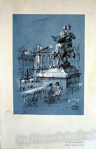
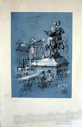
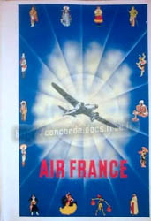

Menu Concorde
Chez British Airways, les menus et cartes des vins étaient séparés en deux documents distincts,
particulièrement sobres dans leur présentation :
Chez Air France, c'était tout le contraire : Un seul document qui regroupait la carte des vins et le menu,
avec des couvertures rivalisant de beauté et de luxe.
La plupart de ces couvertures étaient également utilisées en première classe sur les autres avions de la compagnie,
mais certaines étaient spécifiquement créées pour Concorde.
Des séries d'au moins 4 couvertures sur un même thème étaient créees. Voici par exemple une série sur les instruments de musique :
Les couvertures étaient changées chaque année, et il était indiqué sur la première page la date du vol et le trajet effectué.
Il y eu également une multitude de menus édités spécialement pour des évènements particuliers :
ouverture d'une nouvelle ligne, anniversaires de Concorde, réveillons, an 2000, vols présidentiels,
vols affrétés, tours du monde, suivi éclipse de soleil, arrêt de ligne, etc ...
Il existe donc des centaines de menus différents, dont certains dédicacés par les stars et les VIP qui volaient sur Concorde.
Ces menus sont très recherchés par les collectionneurs, qui sont prêts à mettre plusieurs centaines d'Euros pour les modèles les plus rares.
Extrait du manuel PNC Concorde d'Air France, voici les instructions données au personnel pour dresser la table à bord de Concorde :
Service canapés apéritif Dressage tablette
Service des hors d'oeuvre Service du plat chaud

Service du fromage Service des desserts
Voici un exemple de plats servis sur un vol New-York/Paris en 2002.
Le départ étant matinal et l'arrivée en France étant tardive, il était servi un brunch à la carte :

Vous pouvez voir d'autres photos en couleur des repas Concorde Air France ici (concordesite, sections AF001 et AF002).
Consultez un menu Concorde Air France de 1991

D'autres couvertures de menus Concorde Air France :
 



Des Concordes étaient affretés régulièrement par des entreprises, et des menus spécifiques étaient édités à ces occasions :